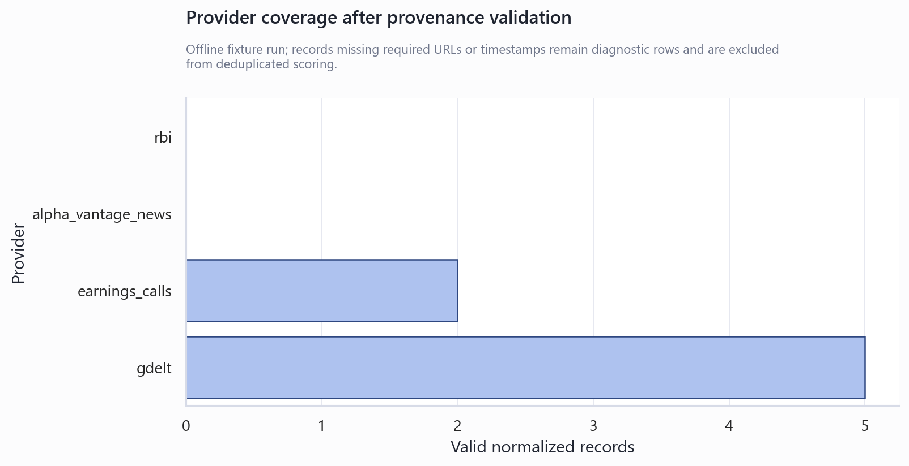
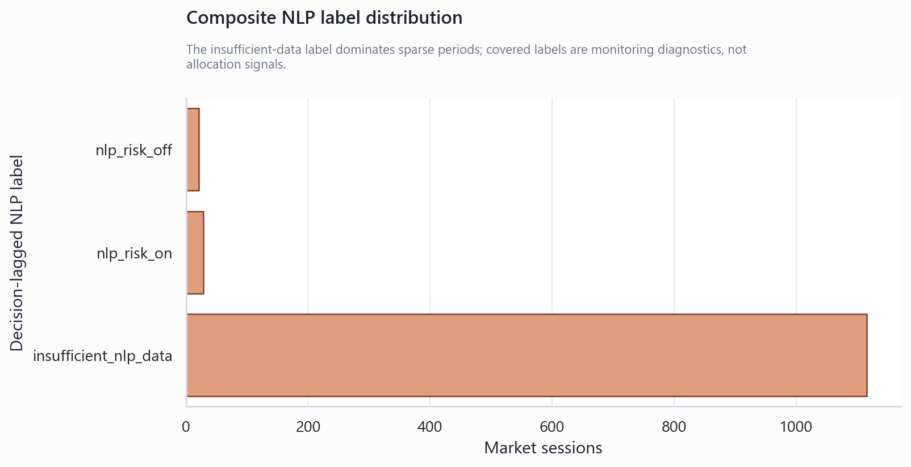

Phase 4A.5 API-Based Ex-Ante NLP Risk Monitoring
Technical Summary
Offline fixtures and local manifests were used. Live API access and API keys were not required.
Provider plumbing works offline, but provenance gaps remain visible
Earnings and GDELT fixtures returned provenance-valid records. Alpha Vantage skipped safely without a key. Synthetic RBI fixture rows lacking source URLs remain visible as invalid diagnostics instead of being silently promoted.

The composite index is intentionally coverage-gated. Sparse periods remain insufficient, while covered periods demonstrate lagged calculation only; the distribution is not evidence of predictive value.

Scope, Data, and Metric Definitions
Each external record stores provider, publication and retrieval timestamps, source URL, language, text, and raw metadata. Ex-ante validity requires both timestamps and publication no later than retrieval. Composite coverage is the fraction of RBI, earnings, and news components available on a session; fewer than two sources yields insufficient_nlp_data.
| provider | status | cache_hit | raw_record_count | valid_record_count | invalid_record_count | fetch_error | provider_failures | fallback_used | source_kind | deduplicated_record_count | deduped_valid_record_count | provider_duplicates_removed |
|---|---|---|---|---|---|---|---|---|---|---|---|---|
| rbi | success | False | 4 | 0 | 4 | True | 35 | 0 | 0 | |||
| earnings_calls | success | False | 2 | 2 | 0 | False | local_transcript_manifest | 0 | 2 | 0 | ||
| gdelt | success | False | 40 | 40 | 0 | False | fixture | 0 | 5 | 35 | ||
| alpha_vantage_news | missing_api_key | False | 0 | 0 | 0 | False | 0 | 0 | 0 |
Decision-lagged label distribution
| label | session_count |
|---|---|
| insufficient_nlp_data | 1116 |
| nlp_risk_on | 28 |
| nlp_risk_off | 21 |
Methodology and Ex-Ante Controls
Providers fetch or load independently, normalize to one schema, retain row-level failures, and deduplicate by URL/title and publication minute. Reaction-oriented phrases are flagged rather than automatically deleted; flagged records are excluded from composite source scoring. FinBERT is local-only and falls back to the lexicon. The composite label is shifted by one day before comparison with lagged rule-based and HMM walk-forward regimes.
Required validation questions
| question | answer |
|---|---|
| 1. Which providers were configured? | rbi, earnings_calls, gdelt, alpha_vantage_news |
| 2. Which providers returned data? | earnings_calls, gdelt |
| 3. Which records were ex-ante valid? | 7 of 7 normalized, deduplicated records |
| 4. Were possible reaction-data records flagged? | Yes; 1 record(s) |
| 5. Was FinBERT used or did it fall back? | Lexicon fallback was recorded for 7 record(s) |
| 6. What was the source coverage? | 2 of 4 providers returned provenance-valid data; composite decision coverage was 4.2% |
| 7. What was the composite NLP risk label distribution? | insufficient_nlp_data: 1116; nlp_risk_on: 28; nlp_risk_off: 21 |
| 8. How often did NLP agree with HMM regimes? | 42.9% |
| 9. How often did NLP agree with rule-based regimes? | 65.3% |
| 10. Did NLP show pre-stress warnings? | 1 warning onset(s) |
| 11. Is the signal suitable for allocation testing? | No. API-based NLP risk is a confirmation and monitoring layer only. It is not yet promoted to allocation or strategy scoring. |
Fixtures validate behavior, not signal efficacy
This report uses synthetic or fixture text and deterministic market history. Live API reliability, historical completeness, licensing, language coverage, provider revisions, model calibration, and publication-time governance remain unvalidated. Vendor sentiment is retained only as metadata. No future returns, price reactions, volatility, or drawdown values enter NLP scoring. Full-sample HMM is not used.
Run governed shadow monitoring before any allocation experiment
- Enable one provider at a time with reviewed credentials, rate limits, and retention rules.
- Measure stable source coverage and publication-time completeness over an out-of-sample shadow period.
- Validate FinBERT and provider-sentiment calibration locally without future-return labels.
- Define explicit eligibility thresholds before considering a separate allocation research phase.
Further Questions
What source mix, freshness threshold, and minimum coverage should make a composite label decision-eligible? How stable are false risk-off rates across providers, languages, sectors, and geopolitical-event types? What licensing and retention constraints govern transcript and news storage?